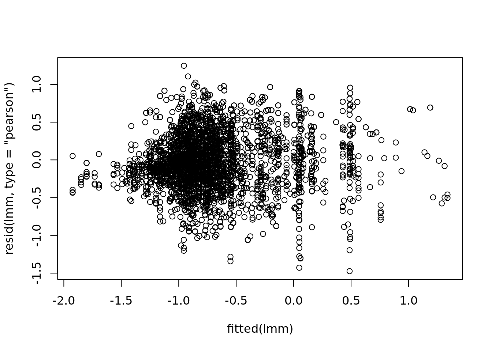
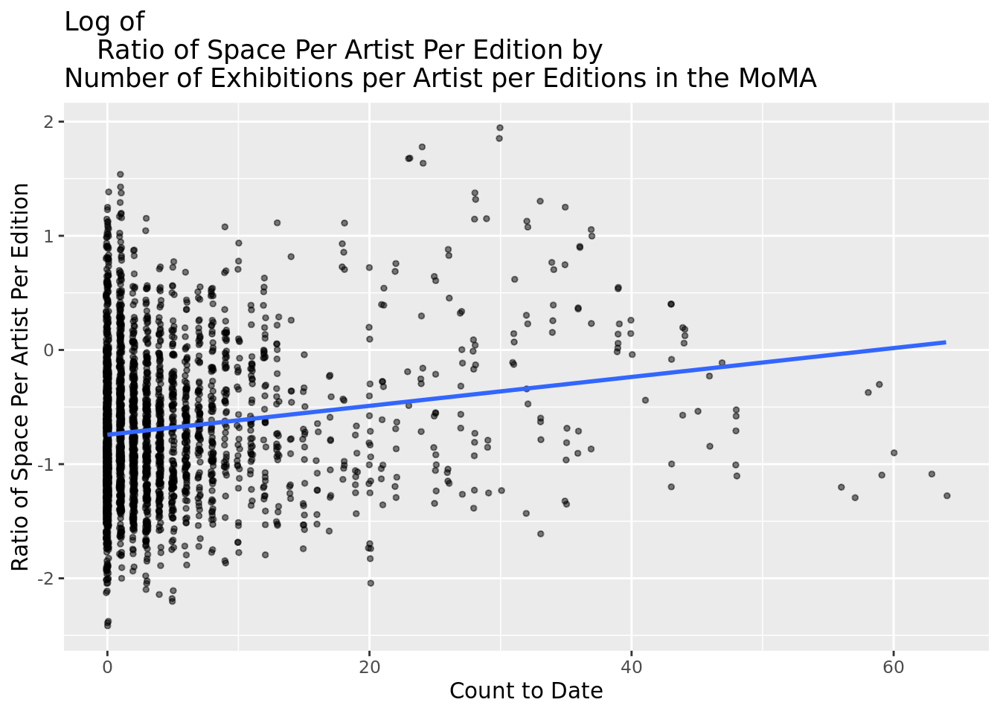
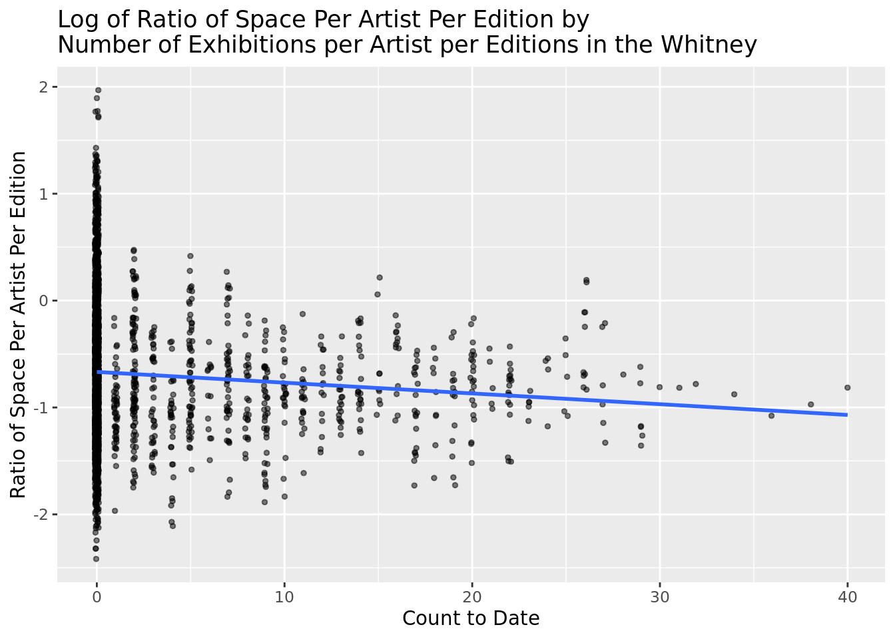

2 Model Exploration
3 Data Preparation for Modeling:
RELEVEL VARIABLES
4 Model Exploration:
pick a handful of interest
visualization : confidence intervals for each on of the slopes
predictors on the y axis -
bar plots of the pvalues another option
nationality discourse for significance
log transformation on the y variable -
stepwise model selection
Start: AIC=-3512.44
log(space_ratio_per_page_total) ~ artist_race_nwi + artist_ethnicity +
artist_gender + artist_nationality_other + moma_count_to_date +
whitney_count_to_date
Df Sum of Sq RSS AIC
+ artist_nationality_other:moma_count_to_date 5 16.535 977.50 -3554.5
+ artist_gender:artist_nationality_other 4 8.200 985.84 -3530.1
+ artist_ethnicity:moma_count_to_date 1 5.917 988.12 -3529.0
+ moma_count_to_date:whitney_count_to_date 1 1.235 992.80 -3514.3
- whitney_count_to_date 1 0.138 994.18 -3514.0
+ artist_gender:whitney_count_to_date 1 1.118 992.92 -3513.9
+ artist_gender:moma_count_to_date 1 1.071 992.97 -3513.8
- artist_ethnicity 1 0.330 994.37 -3513.4
+ artist_race_nwi:whitney_count_to_date 1 0.945 993.09 -3513.4
+ artist_nationality_other:whitney_count_to_date 3 2.163 991.87 -3513.2
+ artist_gender:artist_race_nwi 1 0.657 993.38 -3512.5
<none> 994.04 -3512.4
- artist_race_nwi 1 0.783 994.82 -3512.0
+ artist_gender:artist_ethnicity 1 0.377 993.66 -3511.6
+ artist_race_nwi:moma_count_to_date 1 0.070 993.97 -3510.7
+ artist_race_nwi:artist_ethnicity 1 0.022 994.02 -3510.5
+ artist_ethnicity:whitney_count_to_date 1 0.002 994.04 -3510.4
+ artist_race_nwi:artist_nationality_other 2 0.324 993.71 -3509.4
- artist_gender 1 5.944 999.98 -3495.9
- moma_count_to_date 1 13.876 1007.91 -3471.4
- artist_nationality_other 5 124.081 1118.12 -3157.3
Step: AIC=-3554.5
log(space_ratio_per_page_total) ~ artist_race_nwi + artist_ethnicity +
artist_gender + artist_nationality_other + moma_count_to_date +
whitney_count_to_date + artist_nationality_other:moma_count_to_date
Df Sum of Sq RSS AIC
+ artist_gender:artist_nationality_other 4 7.3801 970.12 -3570.0
- artist_ethnicity 1 0.1229 977.63 -3556.1
+ artist_nationality_other:whitney_count_to_date 3 2.3744 975.13 -3556.0
+ artist_race_nwi:whitney_count_to_date 1 1.0847 976.42 -3555.9
+ artist_gender:whitney_count_to_date 1 0.9190 976.58 -3555.4
- whitney_count_to_date 1 0.4019 977.91 -3555.2
+ moma_count_to_date:whitney_count_to_date 1 0.7178 976.79 -3554.8
<none> 977.50 -3554.5
+ artist_gender:artist_race_nwi 1 0.6202 976.88 -3554.5
+ artist_gender:artist_ethnicity 1 0.2530 977.25 -3553.3
+ artist_race_nwi:moma_count_to_date 1 0.2248 977.28 -3553.2
+ artist_ethnicity:moma_count_to_date 1 0.1764 977.33 -3553.1
+ artist_gender:moma_count_to_date 1 0.0526 977.45 -3552.7
+ artist_race_nwi:artist_ethnicity 1 0.0121 977.49 -3552.5
+ artist_ethnicity:whitney_count_to_date 1 0.0000 977.50 -3552.5
+ artist_race_nwi:artist_nationality_other 2 0.4900 977.01 -3552.1
- artist_race_nwi 1 1.7749 979.28 -3550.9
- artist_gender 1 5.5619 983.07 -3538.9
- artist_nationality_other:moma_count_to_date 5 16.5347 994.04 -3512.4
Step: AIC=-3570.03
log(space_ratio_per_page_total) ~ artist_race_nwi + artist_ethnicity +
artist_gender + artist_nationality_other + moma_count_to_date +
whitney_count_to_date + artist_nationality_other:moma_count_to_date +
artist_gender:artist_nationality_other
Df Sum of Sq RSS AIC
- artist_ethnicity 1 0.0360 970.16 -3571.9
+ artist_race_nwi:whitney_count_to_date 1 1.1112 969.01 -3571.6
+ artist_nationality_other:whitney_count_to_date 3 2.1536 967.97 -3570.9
- whitney_count_to_date 1 0.4745 970.60 -3570.5
<none> 970.12 -3570.0
+ moma_count_to_date:whitney_count_to_date 1 0.6186 969.50 -3570.0
+ artist_gender:whitney_count_to_date 1 0.2511 969.87 -3568.8
+ artist_race_nwi:moma_count_to_date 1 0.2395 969.88 -3568.8
+ artist_gender:artist_race_nwi 1 0.1749 969.95 -3568.6
+ artist_gender:moma_count_to_date 1 0.1622 969.96 -3568.5
+ artist_ethnicity:moma_count_to_date 1 0.0754 970.05 -3568.3
+ artist_ethnicity:whitney_count_to_date 1 0.0247 970.10 -3568.1
+ artist_gender:artist_ethnicity 1 0.0123 970.11 -3568.1
+ artist_race_nwi:artist_ethnicity 1 0.0037 970.12 -3568.0
+ artist_race_nwi:artist_nationality_other 2 0.5068 969.62 -3567.6
- artist_race_nwi 1 1.8474 971.97 -3566.1
- artist_gender:artist_nationality_other 4 7.3801 977.50 -3554.5
- artist_nationality_other:moma_count_to_date 5 15.7149 985.84 -3530.1
Step: AIC=-3571.91
log(space_ratio_per_page_total) ~ artist_race_nwi + artist_gender +
artist_nationality_other + moma_count_to_date + whitney_count_to_date +
artist_nationality_other:moma_count_to_date + artist_gender:artist_nationality_other
Df Sum of Sq RSS AIC
+ artist_race_nwi:whitney_count_to_date 1 1.1235 969.04 -3573.5
+ artist_nationality_other:whitney_count_to_date 3 2.1263 968.03 -3572.7
- whitney_count_to_date 1 0.4676 970.63 -3572.4
<none> 970.16 -3571.9
+ moma_count_to_date:whitney_count_to_date 1 0.6218 969.54 -3571.9
+ artist_gender:whitney_count_to_date 1 0.2503 969.91 -3570.7
+ artist_race_nwi:moma_count_to_date 1 0.2462 969.91 -3570.7
+ artist_gender:artist_race_nwi 1 0.1672 969.99 -3570.4
+ artist_gender:moma_count_to_date 1 0.1638 970.00 -3570.4
+ artist_ethnicity 1 0.0360 970.12 -3570.0
+ artist_race_nwi:artist_nationality_other 2 0.5239 969.64 -3569.6
- artist_race_nwi 1 1.9027 972.06 -3567.8
- artist_gender:artist_nationality_other 4 7.4670 977.63 -3556.1
- artist_nationality_other:moma_count_to_date 5 15.7921 985.95 -3531.8
Step: AIC=-3573.51
log(space_ratio_per_page_total) ~ artist_race_nwi + artist_gender +
artist_nationality_other + moma_count_to_date + whitney_count_to_date +
artist_nationality_other:moma_count_to_date + artist_gender:artist_nationality_other +
artist_race_nwi:whitney_count_to_date
Df Sum of Sq RSS AIC
+ artist_nationality_other:whitney_count_to_date 3 2.1592 966.88 -3574.4
<none> 969.04 -3573.5
+ moma_count_to_date:whitney_count_to_date 1 0.4021 968.63 -3572.8
+ artist_gender:whitney_count_to_date 1 0.3023 968.73 -3572.5
+ artist_gender:artist_race_nwi 1 0.2073 968.83 -3572.2
+ artist_gender:moma_count_to_date 1 0.1887 968.85 -3572.1
- artist_race_nwi:whitney_count_to_date 1 1.1235 970.16 -3571.9
+ artist_ethnicity 1 0.0237 969.01 -3571.6
+ artist_race_nwi:moma_count_to_date 1 0.0010 969.04 -3571.5
+ artist_race_nwi:artist_nationality_other 2 0.1337 968.90 -3569.9
- artist_gender:artist_nationality_other 4 7.4798 976.52 -3557.6
- artist_nationality_other:moma_count_to_date 5 15.9122 984.95 -3533.0
Step: AIC=-3574.43
log(space_ratio_per_page_total) ~ artist_race_nwi + artist_gender +
artist_nationality_other + moma_count_to_date + whitney_count_to_date +
artist_nationality_other:moma_count_to_date + artist_gender:artist_nationality_other +
artist_race_nwi:whitney_count_to_date + artist_nationality_other:whitney_count_to_date
Df Sum of Sq RSS AIC
+ moma_count_to_date:whitney_count_to_date 1 0.9198 965.96 -3575.4
<none> 966.88 -3574.4
+ artist_gender:whitney_count_to_date 1 0.3764 966.50 -3573.6
- artist_nationality_other:whitney_count_to_date 3 2.1592 969.04 -3573.5
+ artist_gender:moma_count_to_date 1 0.2128 966.66 -3573.1
+ artist_gender:artist_race_nwi 1 0.1866 966.69 -3573.0
- artist_race_nwi:whitney_count_to_date 1 1.1564 968.03 -3572.7
+ artist_ethnicity 1 0.0484 966.83 -3572.6
+ artist_race_nwi:moma_count_to_date 1 0.0034 966.87 -3572.4
+ artist_race_nwi:artist_nationality_other 2 0.1007 966.78 -3570.8
- artist_gender:artist_nationality_other 4 7.2957 974.17 -3559.1
- artist_nationality_other:moma_count_to_date 5 16.0678 982.94 -3533.3
Step: AIC=-3575.38
log(space_ratio_per_page_total) ~ artist_race_nwi + artist_gender +
artist_nationality_other + moma_count_to_date + whitney_count_to_date +
artist_nationality_other:moma_count_to_date + artist_gender:artist_nationality_other +
artist_race_nwi:whitney_count_to_date + artist_nationality_other:whitney_count_to_date +
moma_count_to_date:whitney_count_to_date
Df
<none>
+ artist_gender:moma_count_to_date 1
- artist_race_nwi:whitney_count_to_date 1
- moma_count_to_date:whitney_count_to_date 1
+ artist_gender:whitney_count_to_date 1
+ artist_gender:artist_race_nwi 1
+ artist_ethnicity 1
+ artist_race_nwi:moma_count_to_date 1
- artist_nationality_other:whitney_count_to_date 3
+ artist_race_nwi:artist_nationality_other 2
+ artist_nationality_other:moma_count_to_date:whitney_count_to_date 3
- artist_gender:artist_nationality_other 4
- artist_nationality_other:moma_count_to_date 5
Sum of Sq
<none>
+ artist_gender:moma_count_to_date 0.3982
- artist_race_nwi:whitney_count_to_date 0.8927
- moma_count_to_date:whitney_count_to_date 0.9198
+ artist_gender:whitney_count_to_date 0.2676
+ artist_gender:artist_race_nwi 0.2095
+ artist_ethnicity 0.0558
+ artist_race_nwi:moma_count_to_date 0.0053
- artist_nationality_other:whitney_count_to_date 2.6768
+ artist_race_nwi:artist_nationality_other 0.1308
+ artist_nationality_other:moma_count_to_date:whitney_count_to_date 0.0439
- artist_gender:artist_nationality_other 7.1619
- artist_nationality_other:moma_count_to_date 15.6640
RSS
<none> 965.96
+ artist_gender:moma_count_to_date 965.56
- artist_race_nwi:whitney_count_to_date 966.85
- moma_count_to_date:whitney_count_to_date 966.88
+ artist_gender:whitney_count_to_date 965.69
+ artist_gender:artist_race_nwi 965.75
+ artist_ethnicity 965.90
+ artist_race_nwi:moma_count_to_date 965.95
- artist_nationality_other:whitney_count_to_date 968.63
+ artist_race_nwi:artist_nationality_other 965.83
+ artist_nationality_other:moma_count_to_date:whitney_count_to_date 965.91
- artist_gender:artist_nationality_other 973.12
- artist_nationality_other:moma_count_to_date 981.62
AIC
<none> -3575.4
+ artist_gender:moma_count_to_date -3574.7
- artist_race_nwi:whitney_count_to_date -3574.5
- moma_count_to_date:whitney_count_to_date -3574.4
+ artist_gender:whitney_count_to_date -3574.2
+ artist_gender:artist_race_nwi -3574.1
+ artist_ethnicity -3573.6
+ artist_race_nwi:moma_count_to_date -3573.4
- artist_nationality_other:whitney_count_to_date -3572.8
+ artist_race_nwi:artist_nationality_other -3571.8
+ artist_nationality_other:moma_count_to_date:whitney_count_to_date -3569.5
- artist_gender:artist_nationality_other -3560.5
- artist_nationality_other:moma_count_to_date -3535.5the multiple of the number of degrees of freedom used for the penalty. Only k = 2 gives the genuine AIC: k = log(n) is sometimes referred to as BIC or SBC.
Start: AIC=-3445.99
log(space_ratio_per_page_total) ~ artist_race_nwi + artist_ethnicity +
artist_gender + artist_nationality_other + moma_count_to_date +
whitney_count_to_date
Df Sum of Sq RSS AIC
+ artist_nationality_other:moma_count_to_date 5 16.535 977.50 -3457.9
+ artist_ethnicity:moma_count_to_date 1 5.917 988.12 -3456.5
- whitney_count_to_date 1 0.138 994.18 -3453.6
- artist_ethnicity 1 0.330 994.37 -3453.0
- artist_race_nwi 1 0.783 994.82 -3451.6
<none> 994.04 -3446.0
+ moma_count_to_date:whitney_count_to_date 1 1.235 992.80 -3441.8
+ artist_gender:whitney_count_to_date 1 1.118 992.92 -3441.4
+ artist_gender:moma_count_to_date 1 1.071 992.97 -3441.3
+ artist_race_nwi:whitney_count_to_date 1 0.945 993.09 -3440.9
+ artist_gender:artist_race_nwi 1 0.657 993.38 -3440.0
+ artist_gender:artist_nationality_other 4 8.200 985.84 -3439.5
+ artist_gender:artist_ethnicity 1 0.377 993.66 -3439.1
+ artist_race_nwi:moma_count_to_date 1 0.070 993.97 -3438.2
+ artist_race_nwi:artist_ethnicity 1 0.022 994.02 -3438.0
+ artist_ethnicity:whitney_count_to_date 1 0.002 994.04 -3438.0
- artist_gender 1 5.944 999.98 -3435.5
+ artist_race_nwi:artist_nationality_other 2 0.324 993.71 -3430.9
+ artist_nationality_other:whitney_count_to_date 3 2.163 991.87 -3428.6
- moma_count_to_date 1 13.876 1007.91 -3411.0
- artist_nationality_other 5 124.081 1118.12 -3121.1
Step: AIC=-3457.85
log(space_ratio_per_page_total) ~ artist_race_nwi + artist_ethnicity +
artist_gender + artist_nationality_other + moma_count_to_date +
whitney_count_to_date + artist_nationality_other:moma_count_to_date
Df Sum of Sq RSS AIC
- artist_ethnicity 1 0.1229 977.63 -3465.5
- whitney_count_to_date 1 0.4019 977.91 -3464.6
- artist_race_nwi 1 1.7749 979.28 -3460.3
<none> 977.50 -3457.9
+ artist_race_nwi:whitney_count_to_date 1 1.0847 976.42 -3453.3
+ artist_gender:whitney_count_to_date 1 0.9190 976.58 -3452.7
+ moma_count_to_date:whitney_count_to_date 1 0.7178 976.79 -3452.1
+ artist_gender:artist_race_nwi 1 0.6202 976.88 -3451.8
+ artist_gender:artist_ethnicity 1 0.2530 977.25 -3450.6
+ artist_race_nwi:moma_count_to_date 1 0.2248 977.28 -3450.5
+ artist_ethnicity:moma_count_to_date 1 0.1764 977.33 -3450.4
+ artist_gender:moma_count_to_date 1 0.0526 977.45 -3450.0
+ artist_race_nwi:artist_ethnicity 1 0.0121 977.49 -3449.9
+ artist_ethnicity:whitney_count_to_date 1 0.0000 977.50 -3449.8
+ artist_gender:artist_nationality_other 4 7.3801 970.12 -3449.2
- artist_gender 1 5.5619 983.07 -3448.3
- artist_nationality_other:moma_count_to_date 5 16.5347 994.04 -3446.0
+ artist_race_nwi:artist_nationality_other 2 0.4900 977.01 -3443.3
+ artist_nationality_other:whitney_count_to_date 3 2.3744 975.13 -3441.3
Step: AIC=-3465.5
log(space_ratio_per_page_total) ~ artist_race_nwi + artist_gender +
artist_nationality_other + moma_count_to_date + whitney_count_to_date +
artist_nationality_other:moma_count_to_date
Df Sum of Sq RSS AIC
- whitney_count_to_date 1 0.3916 978.02 -3472.3
- artist_race_nwi 1 1.8653 979.49 -3467.6
<none> 977.63 -3465.5
+ artist_race_nwi:whitney_count_to_date 1 1.1107 976.52 -3461.0
+ artist_gender:whitney_count_to_date 1 0.8964 976.73 -3460.3
+ moma_count_to_date:whitney_count_to_date 1 0.7245 976.90 -3459.8
+ artist_gender:artist_race_nwi 1 0.6079 977.02 -3459.4
+ artist_race_nwi:moma_count_to_date 1 0.2400 977.39 -3458.2
+ artist_ethnicity 1 0.1229 977.50 -3457.9
+ artist_gender:moma_count_to_date 1 0.0605 977.57 -3457.7
+ artist_gender:artist_nationality_other 4 7.4670 970.16 -3457.1
- artist_gender 1 5.4624 983.09 -3456.2
- artist_nationality_other:moma_count_to_date 5 16.7418 994.37 -3453.0
+ artist_race_nwi:artist_nationality_other 2 0.5242 977.10 -3451.1
+ artist_nationality_other:whitney_count_to_date 3 2.3238 975.30 -3448.8
Step: AIC=-3472.3
log(space_ratio_per_page_total) ~ artist_race_nwi + artist_gender +
artist_nationality_other + moma_count_to_date + artist_nationality_other:moma_count_to_date
Df Sum of Sq RSS AIC
- artist_race_nwi 1 1.9219 979.94 -3474.2
<none> 978.02 -3472.3
+ artist_gender:artist_race_nwi 1 0.5965 977.42 -3466.2
+ whitney_count_to_date 1 0.3916 977.63 -3465.5
+ artist_race_nwi:moma_count_to_date 1 0.2934 977.72 -3465.2
+ artist_ethnicity 1 0.1125 977.91 -3464.6
+ artist_gender:moma_count_to_date 1 0.0990 977.92 -3464.6
+ artist_gender:artist_nationality_other 4 7.3910 970.63 -3463.7
- artist_gender 1 5.5988 983.62 -3462.6
- artist_nationality_other:moma_count_to_date 5 16.4789 994.50 -3460.6
+ artist_race_nwi:artist_nationality_other 2 0.5301 977.49 -3457.9
Step: AIC=-3474.25
log(space_ratio_per_page_total) ~ artist_gender + artist_nationality_other +
moma_count_to_date + artist_nationality_other:moma_count_to_date
Df Sum of Sq RSS AIC
<none> 979.94 -3474.2
+ artist_race_nwi 1 1.9219 978.02 -3472.3
+ whitney_count_to_date 1 0.4482 979.49 -3467.6
+ artist_ethnicity 1 0.2002 979.74 -3466.8
+ artist_gender:moma_count_to_date 1 0.0927 979.85 -3466.5
- artist_nationality_other:moma_count_to_date 5 15.4531 995.39 -3465.9
+ artist_gender:artist_nationality_other 4 7.3486 972.59 -3465.5
- artist_gender 1 5.6610 985.60 -3464.4Linear mixed model fit by maximum likelihood . t-tests use Satterthwaite's
method [lmerModLmerTest]
Formula: log(space_ratio_per_page_total) ~ artist_race + artist_ethnicity +
artist_gender + artist_nationality_other + moma_count_to_date +
whitney_count_to_date + artist_gender * moma_count_to_date +
artist_nationality_other * moma_count_to_date + (1 | artist_name)
Data: gardnerjanson_museums
AIC BIC logLik deviance df.resid
3907.9 4046.9 -1931.0 3861.9 3081
Scaled residuals:
Min 1Q Median 3Q Max
-3.6310 -0.5872 -0.0783 0.6271 3.0678
Random effects:
Groups Name Variance Std.Dev.
artist_name (Intercept) 0.1264 0.3556
Residual 0.1649 0.4060
Number of obs: 3104, groups: artist_name, 395
Fixed effects:
Estimate Std. Error
(Intercept) -1.007e+00 3.495e-01
artist_raceAsian -9.882e-02 3.451e-01
artist_raceBlack or African American 4.443e-02 3.393e-01
artist_raceN/A -5.558e-02 4.671e-01
artist_raceNative Hawaiian or Other Pacific Islander 2.022e-01 4.007e-01
artist_raceWhite 2.414e-02 3.270e-01
artist_ethnicityNot Hispanic or Latinx -1.494e-02 1.316e-01
artist_genderMale 7.891e-02 6.944e-02
artist_nationality_otherBritish 5.249e-03 8.311e-02
artist_nationality_otherFrench 2.637e-01 6.725e-02
artist_nationality_otherGerman -6.458e-02 8.828e-02
artist_nationality_otherOther -5.073e-02 6.631e-02
artist_nationality_otherSpanish 6.339e-01 2.409e-01
moma_count_to_date -1.073e-03 1.235e-02
whitney_count_to_date 1.761e-03 3.768e-03
artist_genderMale:moma_count_to_date -1.350e-02 1.429e-02
artist_nationality_otherBritish:moma_count_to_date 1.371e-02 1.726e-02
artist_nationality_otherFrench:moma_count_to_date 3.291e-02 9.191e-03
artist_nationality_otherGerman:moma_count_to_date 2.825e-02 9.959e-03
artist_nationality_otherOther:moma_count_to_date 1.929e-02 9.271e-03
artist_nationality_otherSpanish:moma_count_to_date 3.959e-02 1.055e-02
df t value
(Intercept) 6.413e+02 -2.882
artist_raceAsian 6.528e+02 -0.286
artist_raceBlack or African American 6.485e+02 0.131
artist_raceN/A 6.773e+02 -0.119
artist_raceNative Hawaiian or Other Pacific Islander 6.310e+02 0.505
artist_raceWhite 6.680e+02 0.074
artist_ethnicityNot Hispanic or Latinx 4.991e+02 -0.114
artist_genderMale 4.449e+02 1.136
artist_nationality_otherBritish 4.575e+02 0.063
artist_nationality_otherFrench 4.635e+02 3.921
artist_nationality_otherGerman 4.846e+02 -0.732
artist_nationality_otherOther 5.244e+02 -0.765
artist_nationality_otherSpanish 4.018e+02 2.631
moma_count_to_date 5.679e+02 -0.087
whitney_count_to_date 9.689e+02 0.467
artist_genderMale:moma_count_to_date 6.475e+02 -0.944
artist_nationality_otherBritish:moma_count_to_date 7.781e+02 0.795
artist_nationality_otherFrench:moma_count_to_date 1.000e+03 3.580
artist_nationality_otherGerman:moma_count_to_date 1.009e+03 2.837
artist_nationality_otherOther:moma_count_to_date 8.612e+02 2.081
artist_nationality_otherSpanish:moma_count_to_date 1.592e+03 3.753
Pr(>|t|)
(Intercept) 0.004080 **
artist_raceAsian 0.774700
artist_raceBlack or African American 0.895857
artist_raceN/A 0.905309
artist_raceNative Hawaiian or Other Pacific Islander 0.613965
artist_raceWhite 0.941172
artist_ethnicityNot Hispanic or Latinx 0.909657
artist_genderMale 0.256386
artist_nationality_otherBritish 0.949669
artist_nationality_otherFrench 0.000101 ***
artist_nationality_otherGerman 0.464776
artist_nationality_otherOther 0.444524
artist_nationality_otherSpanish 0.008838 **
moma_count_to_date 0.930835
whitney_count_to_date 0.640421
artist_genderMale:moma_count_to_date 0.345469
artist_nationality_otherBritish:moma_count_to_date 0.427104
artist_nationality_otherFrench:moma_count_to_date 0.000360 ***
artist_nationality_otherGerman:moma_count_to_date 0.004644 **
artist_nationality_otherOther:moma_count_to_date 0.037702 *
artist_nationality_otherSpanish:moma_count_to_date 0.000181 ***
---
Signif. codes: 0 '***' 0.001 '**' 0.01 '*' 0.05 '.' 0.1 ' ' 1 GVIF Df GVIF^(1/(2*Df))
artist_race 1.375255 5 1.032377
artist_ethnicity 1.609272 1 1.268571
artist_gender 1.310043 1 1.144571
artist_nationality_other 4.055801 5 1.150291
moma_count_to_date 31.944102 1 5.651911
whitney_count_to_date 1.232127 1 1.110012
artist_gender:moma_count_to_date 41.927417 1 6.475138
artist_nationality_other:moma_count_to_date 23.593720 5 1.371765GET PVALUES FOR COEFFICIENTS - STATISTICALLY SIGNIFICANT - GO THROUGH INTERPRETATIONS WITH LOG TRANSFORMATION AND MIXED EFFECTS MODEL - CONFIRM MODEL DIAGNOSTICS - AIC / BIC FOR MIXED EFFECTS -
Linear mixed model fit by maximum likelihood . t-tests use Satterthwaite's
method [lmerModLmerTest]
Formula: log(space_ratio_per_page_total) ~ artist_race + artist_ethnicity +
artist_gender + artist_nationality_other + moma_count_to_date +
whitney_count_to_date + artist_gender * moma_count_to_date +
artist_nationality_other * moma_count_to_date + (1 | artist_name)
Data: gardnerjanson_museums
AIC BIC logLik deviance df.resid
3907.9 4046.9 -1931.0 3861.9 3081
Scaled residuals:
Min 1Q Median 3Q Max
-3.6310 -0.5872 -0.0783 0.6271 3.0678
Random effects:
Groups Name Variance Std.Dev.
artist_name (Intercept) 0.1264 0.3556
Residual 0.1649 0.4060
Number of obs: 3104, groups: artist_name, 395
Fixed effects:
Estimate Std. Error
(Intercept) -1.007e+00 3.495e-01
artist_raceAsian -9.882e-02 3.451e-01
artist_raceBlack or African American 4.443e-02 3.393e-01
artist_raceN/A -5.558e-02 4.671e-01
artist_raceNative Hawaiian or Other Pacific Islander 2.022e-01 4.007e-01
artist_raceWhite 2.414e-02 3.270e-01
artist_ethnicityNot Hispanic or Latinx -1.494e-02 1.316e-01
artist_genderMale 7.891e-02 6.944e-02
artist_nationality_otherBritish 5.249e-03 8.311e-02
artist_nationality_otherFrench 2.637e-01 6.725e-02
artist_nationality_otherGerman -6.458e-02 8.828e-02
artist_nationality_otherOther -5.073e-02 6.631e-02
artist_nationality_otherSpanish 6.339e-01 2.409e-01
moma_count_to_date -1.073e-03 1.235e-02
whitney_count_to_date 1.761e-03 3.768e-03
artist_genderMale:moma_count_to_date -1.350e-02 1.429e-02
artist_nationality_otherBritish:moma_count_to_date 1.371e-02 1.726e-02
artist_nationality_otherFrench:moma_count_to_date 3.291e-02 9.191e-03
artist_nationality_otherGerman:moma_count_to_date 2.825e-02 9.959e-03
artist_nationality_otherOther:moma_count_to_date 1.929e-02 9.271e-03
artist_nationality_otherSpanish:moma_count_to_date 3.959e-02 1.055e-02
df t value
(Intercept) 6.413e+02 -2.882
artist_raceAsian 6.528e+02 -0.286
artist_raceBlack or African American 6.485e+02 0.131
artist_raceN/A 6.773e+02 -0.119
artist_raceNative Hawaiian or Other Pacific Islander 6.310e+02 0.505
artist_raceWhite 6.680e+02 0.074
artist_ethnicityNot Hispanic or Latinx 4.991e+02 -0.114
artist_genderMale 4.449e+02 1.136
artist_nationality_otherBritish 4.575e+02 0.063
artist_nationality_otherFrench 4.635e+02 3.921
artist_nationality_otherGerman 4.846e+02 -0.732
artist_nationality_otherOther 5.244e+02 -0.765
artist_nationality_otherSpanish 4.018e+02 2.631
moma_count_to_date 5.679e+02 -0.087
whitney_count_to_date 9.689e+02 0.467
artist_genderMale:moma_count_to_date 6.475e+02 -0.944
artist_nationality_otherBritish:moma_count_to_date 7.781e+02 0.795
artist_nationality_otherFrench:moma_count_to_date 1.000e+03 3.580
artist_nationality_otherGerman:moma_count_to_date 1.009e+03 2.837
artist_nationality_otherOther:moma_count_to_date 8.612e+02 2.081
artist_nationality_otherSpanish:moma_count_to_date 1.592e+03 3.753
Pr(>|t|)
(Intercept) 0.004080 **
artist_raceAsian 0.774700
artist_raceBlack or African American 0.895857
artist_raceN/A 0.905309
artist_raceNative Hawaiian or Other Pacific Islander 0.613965
artist_raceWhite 0.941172
artist_ethnicityNot Hispanic or Latinx 0.909657
artist_genderMale 0.256386
artist_nationality_otherBritish 0.949669
artist_nationality_otherFrench 0.000101 ***
artist_nationality_otherGerman 0.464776
artist_nationality_otherOther 0.444524
artist_nationality_otherSpanish 0.008838 **
moma_count_to_date 0.930835
whitney_count_to_date 0.640421
artist_genderMale:moma_count_to_date 0.345469
artist_nationality_otherBritish:moma_count_to_date 0.427104
artist_nationality_otherFrench:moma_count_to_date 0.000360 ***
artist_nationality_otherGerman:moma_count_to_date 0.004644 **
artist_nationality_otherOther:moma_count_to_date 0.037702 *
artist_nationality_otherSpanish:moma_count_to_date 0.000181 ***
---
Signif. codes: 0 '***' 0.001 '**' 0.01 '*' 0.05 '.' 0.1 ' ' 1 R2m R2c
[1,] 0.1733762 0.5321474Marginal R2 provides the variance explained only by fixed effects and conditional R2 provides the variance explained by the entire model, i.e., both fixed effects and random effects.
Model Diagnostics : Check for linearity, independence, residuals, normal distribution of the residuals - no pattern in residuals, constant variance
RESOURCE: https://www.ssc.wisc.edu/sscc/pubs/MM/MM_DiagInfer.html
Plotting : log transform some variables : Fitted v. Residuals
5 Appendix:
5.1 Assumptions:
5.1.1 Residuals and Constant Variance:

for the very low values of the predicted have very low variability for residuals - the rest varied
the a bulk of the data there is constant variability in the residuals
before log transforming our outcome variable, the constant variance assumption was violated. Therefore, in order to pass the constant variance assumption, I performed a log transformation.
5.1.2 Normality:
normal histogram = density plot overlayed -

5.1.3 Linearity:
residuals v quantitative predictors
no pattern is left behind


Normality of random effect: Get the estimate of random effect (in your case random intercepts), and check them as check the residual. But it is not efficient because you just have 7 random intercepts.
5.1.4 Independence:
Another assumption is the independence between subjects. No test, based on your judgement. Subject specific random intercept means the correlation between the response variable from the same subject are the same.
all obervations of different artists are independent -
fitting a mixed model - i dont believe that each piece by each artist is independence - at the artist level we have independence
log transforming predictors - interpretations change - variables weren’t changed - same idea, bit different
INDEPENDENCE: DOUBLE CHECK - EMPIRICALLY ARGUE OR ?
check for time series - residuals v. order of data points
irrelevant - based on how the sample was collected.
verbally argue the independence between artists - since we are using a mixed effects model, and our random effect is per artist, we eliminate the dependence of our observations had we not used a mixed effects model. Between artists, we expect the observations to be independent.